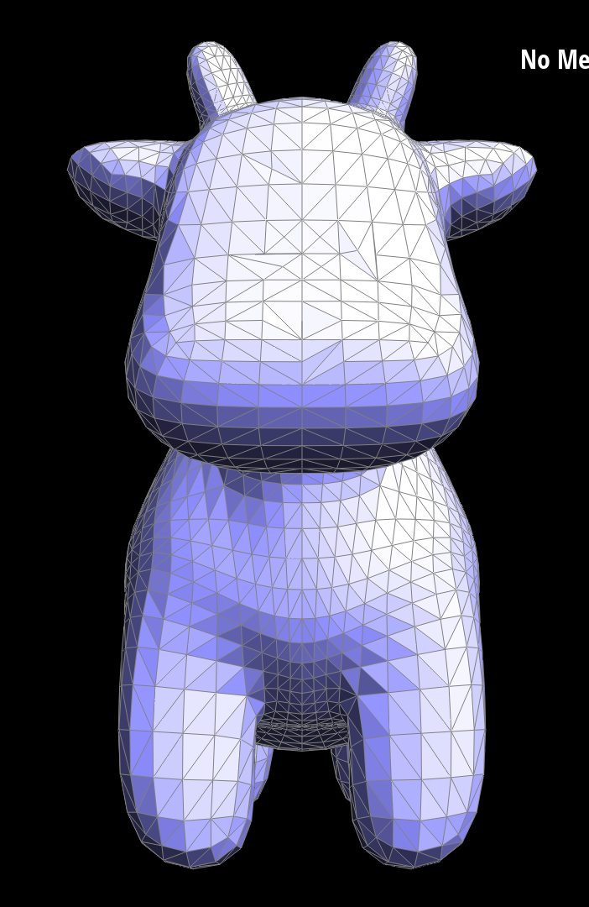

Overview
Mesh editor give us a chance to find some fun in 3D graphics. In section 1, we learned how to apply de Casteljau's algorithm, and implement for Bezier curves to Bezier surfaces. In section 2, we went through vertex normals, and apply edge flip and edge split on meshes. Moreover, we can get familiar with Halfedge structure. Finally, we learned how to do loop subdivision to make graphics smoother and more rounded.
Section I: Bezier Curves and Surfaces
Part 1: Bezier Curves with 1D de Casteljau Subdivision
Briefly explain de Casteljau's algorithm and how you implemented it in order to evaluate Bezier curves.The de Casteljau algorithm can be regarded as repeated linear interpolation for evaluating points on a Bezier curve. Given a Bezier curve defined by a set of control points and a parameter \(t\) that ranges from 0 to 1, we could recursively interpolate the adjacent points using the parameter \(t\) until only one point remains. This final point is the point on the Bezier curve corresponding to the parameter value \(t\).
For the implementation, we implement BezierCurve::evaluateStep() to complete one step of interpolation and recursively call it for \(n-1\) times (assume that there are \(n\) control points). In BezierCurve::evaluateStep(), we iterate over the adjacent points and use lerp function lerp(pi, pi+1, \(t\)) for interpolation and return a vector that contains interpolated points for next level. After \(n-1\) times iteration, the return value should be a vector that contains only one element, which is the point on the Bezier curve corresponding to the parameter value \(t\).
Take a look at the provided .bzc files and create your own Bezier curve with 6 control points of your choosing. Use this Bezier curve for your screenshots below.
Show screenshots of each step / level of the evaluation from the original control points down to the final evaluated point. Press E to step through. Toggle C to show the completed Bezier curve as well.
|
|
|
|
|
|

|
Show a screenshot of a slightly different Bezier curve by moving the original control points around and modifying the parameter \(t\) via mouse scrolling.
Part 2: Bezier Surfaces with Separable 1D de Casteljau
Briefly explain how de Casteljau algorithm extends to Bezier surfaces and how you implemented it in order to evaluate Bezier surfaces.The Bezier surface is defined by a grid of \(n\) x \(n\) control points, where each row of \(n\) points define a Bezier curve and correspoding points on these \(n\) Bezier curves define \(n\) control points for a "moving curve", which sweeps out the 2D surface. The de Casteljau's algorithm in Bezier surfaces takes two parameter \(u\), \(v\). First, we use de Casteljau for Bezier curve to evaluate point \(u\) on each of the \(n\) row Bezier curves. Then, we use 1D de Casteljau to evaluate point \(v\) on the moving curve.
For the implementation, first, we implement BezierPatch::evaluateStep() which is very similar to the function in Part1, except that the points now are 3D. Then, we implement BezierPatch::evaluate1D() by recursively calling BezierPatch::evaluateStep() to return the final point that lies on the Bezier curve at the parameter \(t\). Then we could implement BezierPatch::evaluate() which takes as input the parameter \(u\), \(v\). As described above, we first invoke BezierPatch::evaluate1D() for \(n\) times to determine \(n\) control points for the moving curve using parameter \(u\), and then again call BezierPatch::evaluate1D() on this moving curve using parameter \(v\). Then, we get the final point which lies on the Bezier surface at the given parameter \(u\), \(v\).
Show a screenshot of bez/teapot.bez (not .dae) evaluated by your implementation.
Section II: Triangle Meshes and Half-Edge Data Structure
Part 3: Area-Weighted Vertex Normals
Briefly explain how you implemented the area-weighted vertex normals.1.Find the half-edge of this vertex by h = _halfedge
2.Use positions of three vertices of the face of this half-edge to compute the area of this face. Use the cross function of Vector3D ( 0.5 * cross(y - x, x - z).norm() )
3.Use h->face()->normal() to get the normal vector. We vector which is area * normal vector
4.For faces that incident to the vertex, add all area * normal vector together to be as vector A, and add all area together to be as B
5.Return A/B
Specifically, we need to use h = h->twin()->next() to go to the next face incident to this vertex, so that we can sum up all areas. This loop should stop when h goes back to the first half-edge. Besides, we can use x = h->vertex()->position, y = h->vertex()->next()->position, z = h->vertex()->next()->next()->position to get positions of three vertices of this face, so that we can compute the area.
|
|
|
It is clear that with vertex normals, it has better shading for smooth surfaces than flat shading
Part 4: Edge Flip
Briefly explain how you implemented the edge flip operation and describe any interesting implementation / debugging tricks you have used.To apply edge flip we followed steps in spec. First, we have an original graph, which contains the pair of triangles (a, b, c ) and (a, d, b). And we draw the graph after applying edge flip. ( Containing pair of triangles (a, d, c) and (b, d, c) ). Then, begin to collect all elements: 10 half-edges, 5 edges, 4 vertices, 2 faces. After that, we need to update values for these elements' pointers by looking up the graph we have drawn. We don't want to spend time on debugging, so we try to be exhaustive by reassigning every pointer for every element. We reassigned them by order of every half-edge, every vertex, every edge and every face. In this way, the structure can be clear for us to find where is our problem. Besides, remember to check whether among these two faces there is a face is on the boundary. If there is, just return the original edge e0.
In the above pictures, we assign every half-edge as in left picture first: HalfedgeIter h0 = e0->halfdge(), HalfedgeIter h1 = h0->next() and so on. Also, VertexIter a = h0->vertex(); e1 = h1->edge(); f0 = h0->face(); Then, we do reassignment. We followed the right graph such as h0->edge() = e0; h1->twin() = h9; h7->vertex() = a; f0->halfedge() = h0;
|
|
|
Write about your eventful debugging journey, if you have experienced one.
Just try to stick on the specific order of assigning those pointers can help debug efficiently. For example, follow the order: half-edge, vertex, edge, face. For every half-edge, follow the order: vertex, twin, edge, next, face.
Part 5: Edge Split
Briefly explain how you implemented the edge split operation and describe any interesting implementation / debugging tricks you have used.To apply edge split, we follow steps in spec. First, we have an original graph, which contains the pair of triangles (a, b, c ) and (a, d, b). And we draw the graph after applying edge split. Different from part 4, we need to allocate new edge, vertex, face, half-edge in this part. From the graph, we know that we need 16 half-edges, 8 edges, 5 vertices, 4 faces now. So, we need to create 6 more half-edges, 3 more edges, 1 more vertex, 2 more faces. We can create them use instructions such as HalfedgeIter h01 = newHalfedge(); The step of collecting these elements can be same as part 4. But during the reassignment, we need to update pointes for those new elements also. Just as what we do in part 4, follow a specific order to update those pointers so that it can be clear for us to find the problem. Besides, we also need to assign the position of this new vertex m. It should be set as the midpoint of a and b in below picture.
|
|
|
we can see clearly that in center of this object, there are some edge splits
combination of both edge splits and edge flips.
|
|

|
we can see changes in the center of the face of the cow
Write about your eventful debugging journey, if you have experienced one.
We don't have debugging journey in this part, for we have go through part 4 already. We are more careful in this part in the process.
Part 6: Loop Subdivision for Mesh Upsampling
Briefly explain how you implemented the loop subdivision and describe any interesting implementation / debugging tricks you have used.We do just as what we are recommended, we generate the new position first. We do edge split on these old edges secondly. We do edge flip next on those new edges which connect a new vertex and an old vertex. Finally, we set the vertices' position with new position we have calculated. There is a more specific process.
1.Generate new position for every old vertex. First, for old vertex, we use (1 - n * u) * original_position + u * original_neighbor_position_sum to represent new position. 'n' is the vertex degree, and u is 3/16 when n is 3. Otherwise, u equals to 3/(8n). We set every vertex's newPosition (v->newPosition) to this value we have calculates. To set old vertex's new position, we need to iterate every vertex in the mesh (use loop from mesh.verticesBegin() to mesh.verticesEnd()). Remember to set every vertex's isNew to false. ( V->isNew = false ).!!! To find the neighbors' position, we build a function as what has been mentioned in 'A Prime on the HalfEdgeMesh class' to go through every neighbor vertex, and sum up their positions.( use the loop, let h = h->twin( )->next)( ) until h = v->halfedge( ) )
2.Generate a new position for every new vertex. For new vertex splitting edge (a, b) between a pair of triangle (a, c, b) and (a, b, d), we use 3/8 * (a+b) + 1/8 * (c+d) as the new position. To find all these new vertices, we go through every edges, and set their newPosition (e->newPosition) as which we have calculated. Use similar loop in step 1, we go through mesh.edgesBegin() to mesh.edgesEnd(). Also, set every edge's isNew be false. ( e->isNew = false)
3.Create a vector to store these old edges. We can add elements in this vector in the loop in step 2. We push back every edge we have gone through in this vector, because, we need to do edge split in next step. The reason why we cannot do similar loop as in step1 and step2 is that whoever we split a edge, there will have more edges in this mesh. So, if we use mesh.edgesBegin() to mesh.edgesEnd(), we will split these new edges we have created during the process, which means this loop will never stop, and we only want to split these old edges.
4.Do edge split. Use the vector we created, and apply edge split to every element in it. Remember that edge split function return a new point m. We need to use edge's newPosition to set as this vertex m's newPosition (m->newPosition = e->newPosition). Besides, edge split operator create four new edges and one new vertex. We need to set their isNew values. m's isNew should be true, and two of these four edges should be true as their isNew.
5.Do edge flip. From spec, we know that we only flip a edge which connect a new vertex and an old vertex( judge by using 'isNew' to check whether one of vertices it connect is new and one is old). Moreover, this edge should be new (e->isNew = true). So, when satisfying these conditions we flip this edge.
6.After edge flip, we come to the final step. Set vertices' position to be equal to their newPosition ( v->position = v->newPosition )
Take some notes, as well as some screenshots, of your observations on how meshes behave after loop subdivision. What happens to sharp corners and edges? Can you reduce this effect by pre-splitting some edges?
After loop subdivision, meshes become smoother and more rounded, as loop subdivision divides faces into smaller faces, and move vertices to the average position of their neighbor.Sharp corners and edges can still be presented, while their position will change, they will be smoother and more rounded.
Pre-splitting will reduce this effect. Adding more vertices, faces and edges can help loop subdivision subdivides faces into more and smaller faces, which means there will be more adjustment for vertices and edges. In this way, meshes can be smoother.
|
|
|
we can found clearly that after loop subdivision, the monster becomes smoother and more rounded
Load dae/cube.dae. Perform several iterations of loop subdivision on the cube. Notice that the cube becomes slightly asymmetric after repeated subdivisions. Can you pre-process the cube with edge flips and splits so that the cube subdivides symmetrically? Document these effects and explain why they occur. Also explain how your pre-processing helps alleviate the effects.|
|
|
|
|
|
above pictures do not have pre-splitting. Then we do following changes.
We can make it symmetrical. We do some pre-splitting. We split the edge in every face once. As we increase the number of vertices, edges and faces, it smooth out the surface. The distortion in original mesh is because vertices are move to the average position of their neighbors, so that vertices are at sharp corners move to a rounded position. We can reduce this effect by pre-splitting some edges before loop subdivision. What we do is split every edge on each face once
|
|
|
|
|
|
those above pictures, we do edge split on the edge on each 6 faces one time.